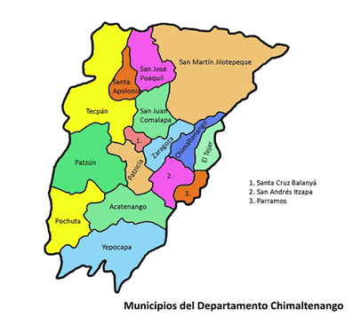

Historia de Chimaltenango
El origen de su nombre proviene de los vocablos "chimal" o escudo y "Tenango" o lugar amurallado. Lo que daría como traducción; Muralla de Escudos. Nombre que le fue dado por haber sido plaza militar fortificada. En 1462 el grupo cakchiquel se separó del dominio Quiché y fundó su capital en una nueva región del lugar llamado Iximché, donde además los españoles fundaron la primera capital de Santiago de los Caballeros de Guatemala, el 25 de julio de 1524, y a partir de esta fecha se introdujo el idioma español que se dio a conocer como la lengua de los colonizadores. Fue conocida como Provincia de Chimaltenango, que colindaba al sur con la de Escuintla y al este con la de Sacatepéquez, en ese entonces, la cabecera era Santa Ana Chimaltenango. En 1825 Chimaltenango y Sacatepéquez formaban un solo departamento y no fue sino hasta el 12 de septiembre de 1839, cuando la Asamblea Constituyente los dividió dejándolos como departamentos separados. En este departamento fue relevante lo que se llamó la firma del acta de Patzicia el 3 de junio de 1871, la cual consolida el triunfo del General Justo Rufino Barrios y los Reformistas, dando auge a diversas políticas de la época. Chimaltenango es uno de los veintidós departamentos que conforman Guatemala, se encuentra situado en la región Central de Guatemala. Limita al norte con los departamentos de El Quiché y Baja Verapaz; al este con Guatemala y Sacatepéquez; al sur con Escuintla y Suchitepéquez, y al oeste con Sololá. La cabecera departamental es Chimaltenango, está a una distancia de aproximada de 54 kilómetros de la Ciudad Capital de Guatemala.
El clima promedio en Chimaltenango Guatemala
En Chimaltenango, la temporada de lluvia es nublada, la temporada seca es mayormente despejada y es cómodo durante todo el año. Durante el transcurso del año, la temperatura generalmente varía de 11 °C a 25 °C y rara vez baja a menos de 8 °C o sube a más de 27 °C.
En base a la puntuación de turismo, la mejor época del año para visitar Chimaltenango para actividades de tiempo caluroso es desde finales de enero hasta finales de abril.